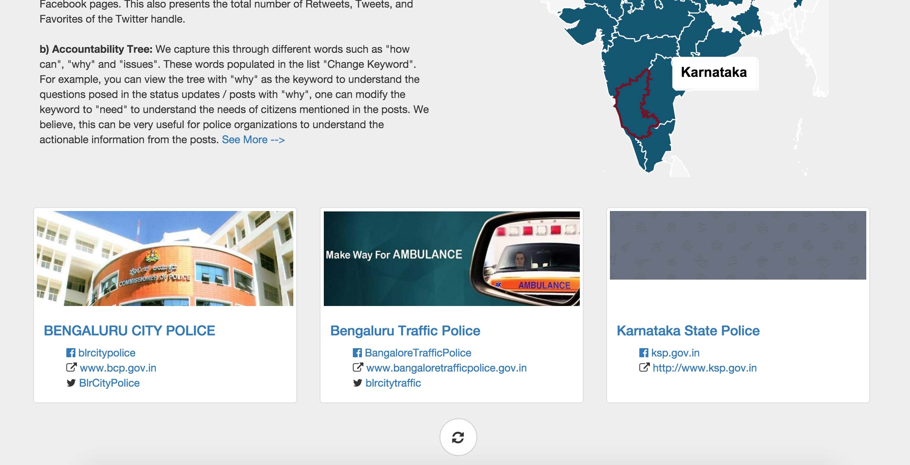
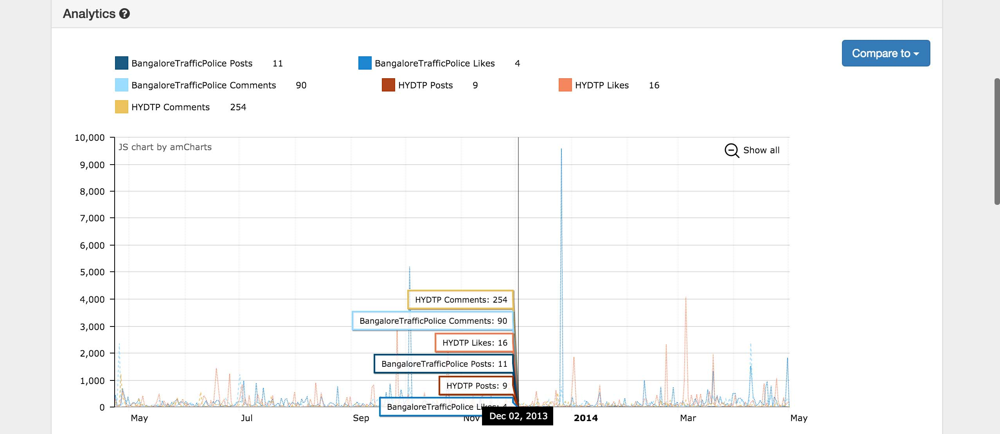
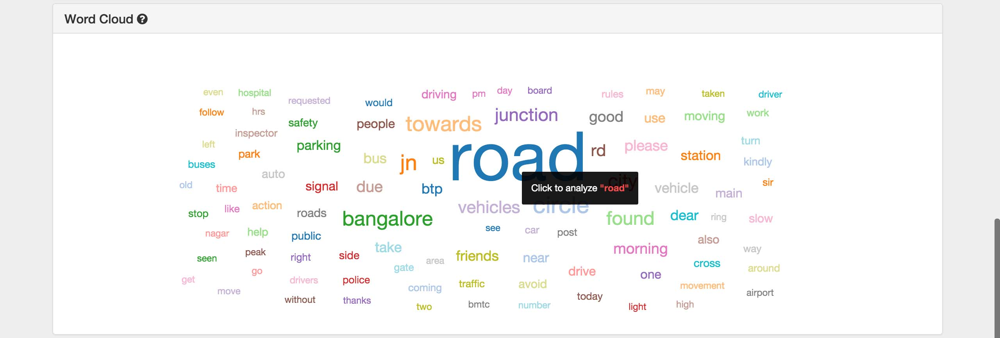
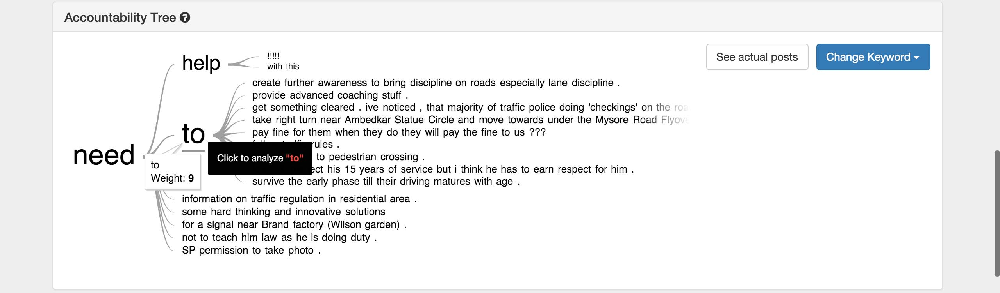
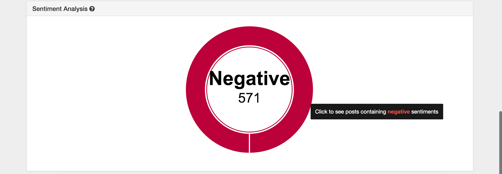

Motivation
Safety is a concern for most urban communities; residents interact in multiple ways with the police to address their safety concerns. Positive interactions with police help residents to feel safe. Residents’ post on OSM contain actionable information that police can use to address safety concerns. This study suggest that in addition to actionable information, OSN can help understand fear of crime among residents and develop mutual accountability between police and residents.
If OSN activity of police departments are truly effective in improving policing, then a dynamic tool for such pages is needed.
Solution
A single stop dashboard that aggregates data from 40+ police departments all over India. This can analyse the presence of these departments over Facebook and Twitter simultaneously. Quantitative analysis in the form of interactive graphs and other qualitative visualisations in the form of trees and clouds can reveal actionable information from the citizen posts.
Features
-

State Wise Indexing
A clickable map of India allows users to select a state and segregate departments that belong to it. This makes it easier to search for departments and also get exposed to neighbouring departments.
-

Activity Analytics
Stats of each department with regard to basic metrics (likes, posts etc.) can be viewed via an interactive graph. The responsive nature of the graph helps users zoom into daily precision. Moreover the activity of a given department can be compared with another.
-

Accountability Tree
Citizen posts are used to construct word trees. The root word/phrase for these trees can be selected from a list of actionable words/phrases. E.g. “Where”, “Need”. A tree can be very useful to subjectively understand what the demands of the citizens are.
-

Word Cloud
A responsive word cloud that allows users to select a word and then re-render a new cloud based on data that contains that target keyword.
-

Sentiment Analysis
The polarity of the posts are calculated and visualised in the form of a donut chart. Clicking a piece of the donut will show actual posts that were detected for a given sentiment.
Future
Dynamic Data
As of now this system runs on static data collected over a specific interval of time. An ideal scenario would be where this data can be collected dynamically.